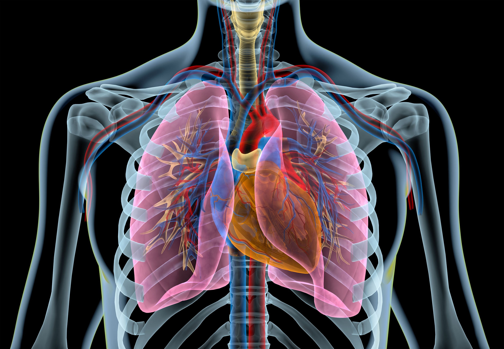
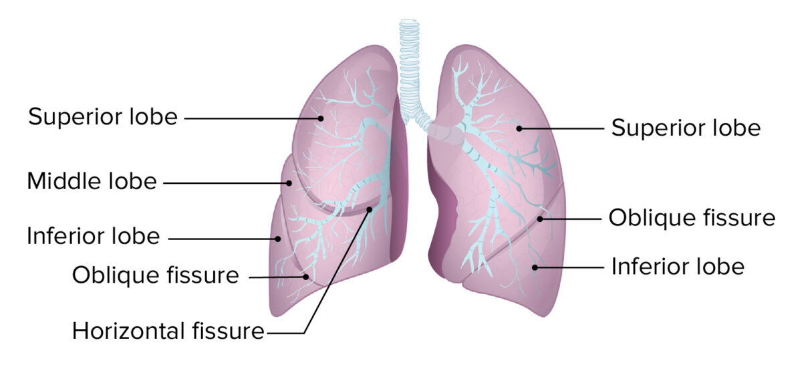

Los pulmones son un par de órganos esponjosos de color gris rosáceo que se encuentran en el pecho. Al inhalar, el aire ingresa a los pulmones y el oxígeno de ese aire pasa a la sangre. Al mismo tiempo, el dióxido de carbono, un gas de desecho, sale de la sangre a los pulmones y es exhalado.

| Pulmón Izquierdo | Pulmón Derecho |
| El pulmón izquierdo es ligeramente más pequeño que el derecho, porque el corazón ocupa algo de espacio en el lado izquierdo. | El pulmón derecho es de mayor tamaño que el izquierdo (debido al espacio que ocupa el corazón). |
| Se divide en 2 lóbulos (Superior e inferior). La función principal del pulmón izquierdo es poder recibir oxígeno del aire que respiramos y eliminar dióxido de carbono del cuerpo. | El pulmón derecho se divide en tres lóbulos (lóbulo superior, medio e inferior), su función es el intercambio gaseoso que hace con el pulmón izquierdo. |
